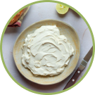
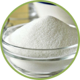
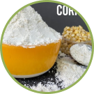
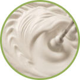
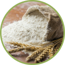
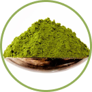
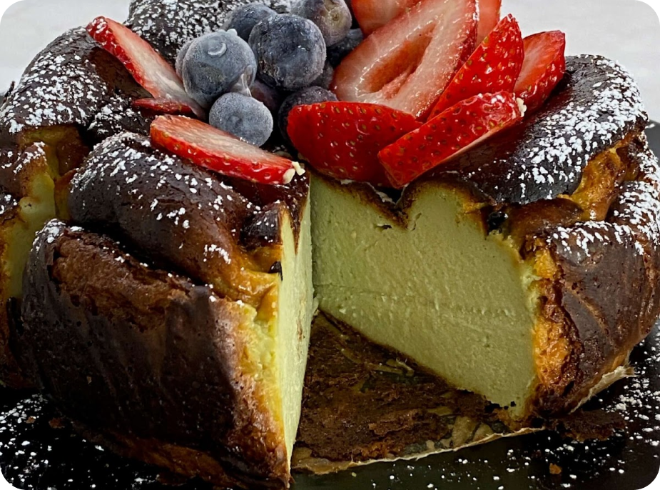
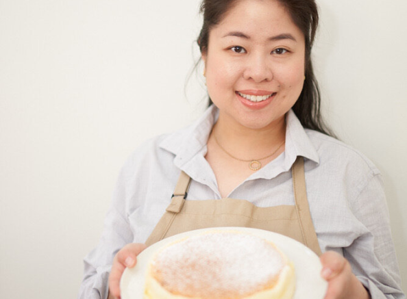

Matcha Burnt Basque Cheesecake Recipe
This beautiful 6-inch matcha Basque cheesecake will have a caramelized top and a deliciously soft cheesecake
interior. Taste it when it's still warm, or have it with a cup of tea or coffee after refrigerating the cake
for
at least four hours. The beauty of this crust-less cake is how asymmetric, burnt, imperfect it is. Your cake
will be tall, and sure to delight your tastebuds!
INGREDIENTS

2 bars of cream cheese (450g)

1/2 cup (104g) fine sugar

2 tbsp (15g) cornstarch

1 cup (240ml) heavy cream

2 1/2 tbsp (20g) flour

1 tbsp (7.38g) matcha powder
INSTRUCTIONS
- Preheat oven 240C or 460F. In a pot over low heat, place the cream cheese and optional butter. Stir and allow cheese to soften into a thick cream, with no clumps. Add the sugar and stir. Remove from heat when you have a smooth, creamy mixture. Add the eggs, one at a time, and mix well.
- Add the flour and cornstarch and mix until smooth, mixing out any clumps. You will not have to strain this batter. Add the milk or cream. Mix well. You can at this point add a splash of vanilla extract and a pinch of salt. Finally, add the matcha paste and stir well.
- A 6-inch springform pan is best. Place a sheet of parchment paper inside the pan, running your fingers over the inside of the rim and the bottoms to dress the pan. Leaver about an inch or two of parchment paper standing tall. Crinkles are fine.
- Pour the batter into the pan and it should fill almost to the top. Smooth out the batter on top with a whisk and bake for 30-35 minutes. The top should have a beautiful burnt brown layer, which is a Basque cheesecake's signature look. The middle should be jiggly. Don't worry, it's fully cooked. Cool in room temperature before refrigerating for at least 4 hours or overnight. Cut the cake and serve at room temperature. Great with a cup of coffee or tea!

Note
Using this base cheesecake recipe, you can substitute the matcha powder with any food powder like
pink
pitaya, black sesame, purple sweet potato, or red beet powder to make it any flavor or color you’d
like!
For Valentine’s Day, I made a beautiful ombre pink pitaya basque cheesecake! To make an ube version,
sub
the matcha powder with 1 to 2 teaspoons ube extract, or 1 to 2 tablespoons ube halaya plus some
extract
for the coloring.
Airfrying
To air fry the Basque cheesecake, place the pan into the air fryer basket and bake for 10 to 15
minutes
at 400 F and then 10 more minutes at 350F.

About the Baker
Kat Lieu is the founder of Subtle Asian Baking and this website modernasianbaking.com, and she is
the
author of Modern Asian Baking at Home. Currently, Kat is a full-time author and recipe developer.
Follow
her on instagram and check out her blog Phil and Mama.